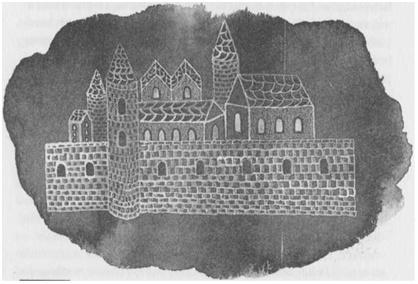

ÜÇ: BÜYÜCÜLER OKULU

Ged o geceyi Gölge'de geçirdi; sabah olunca da erkenden arkasından neşe içinde, iyi dileklerini bağıran ilk deniz-yoldaşlarından ayrılarak doklara doğru yürüdü. Birkaç dar ve dik caddenin etrafına toplanmış yüksek evleriyle Thwil kasabası, pek büyük sayılmazdı. Yine de Ged'e burası, bir şehir kadar büyük geldi. Nereye gideceğini bilmediğinden, önüne çıkan ilk kasabalıya Roke Okulu'nun müdürünü nerede bulabileceğini sordu. Adam onu şöyle yangözle uzun uzun süzdükten sonra, "Akıllıya soru gerekmez; aptal ise boşuna sorar," deyip yoluna devam etti. Ged, üç yanı dik arduvaz damlı evlerle, bir yanı da büyük bir binanın duvarıyla çevrili bir meydana varana kadar yokuş yukarı yürüdü. Binanın duvarındaki küçük pencereler, evlerin bacalarından daha yüksekteydi. Büyük gri taş bloklardan yapılmış olan bina bir kaleye veya şatoya benziyordu. Binanın dibindeki meydanda pazar sergileri kurulmuştu. Etrafta oraya buraya gidip gelen insanlar vardı. Ged aynı soruyu, bu kez elinde bir sepet midye olan yaşlı bir kadına sorunca kadın, "Müdürü her zaman bulunduğu yerde bulamazsın; bazen de olmadığı yerde bulursun," diye cevap verip, midyelerini bağıra bağıra satarak yoluna devam etti.
Büyük binanın bir köşesinde, küçük, özelliği olmayan ahşap bir kapı vardı. Ged kapıya gidip hızlı hızlı çaldı. Kapıyı açan yaşlı adama, "Gont Adası'ndaki Büyücü Ogion'dan, bu adadaki okulun müdürüne bir mektup getirdim. Müdürü arıyorum ama artık daha fazla bilmece duymak ve alaya alınmak istemiyorum," dedi.
"Aradığın okul burası," dedi yaşlı adam kibarca. "Ben kapıcıyım. Eğer girebilirsen buyur gir."
Ged ileriye doğru bir adım attı. Kapıdan içeri geçtiğini zannetti fakat hâlâ dışarda, kaldırımın üzerinde, biraz önce durduğu yerde duruyordu.
Bir kez daha ileriye doğru bir adım attı. Bir kez daha kapının dışında kaldı. Kapıcı, içerden, tatlı tatlı onu seyrediyordu.
Ged, şaşırmaktan çok kızmıştı; çünkü yine kendisiyle alay ediliyor gibi gelmişti ona. Yüksek sesle, elleriyle, uzun süre önce teyzesinin öğretmiş olduğu Açma büyüsünü yaptı. Teyzesinin öğrettiği büyüler içinde en önemlisi buydu; o da artık bu büyüyü büyük bir ustalıkla yapıyordu. Fakat yaptığı sadece bir cadı efsunuydu; bu kapıyı kapalı tutan güce hiçbir faydası olmamıştı.
Bu da işe yaramayınca, Ged uzun süre, orada, kaldırımın üzerinde kalakaldı. En sonunda, içeride beklemekte olan yaşlı adama baktı. "Bana yardım etmezseniz," dedi isteksizce, "giremeyeceğim."
Kapıcı cevap verdi: "Adını söyle."
Ged yine bir süre durdu; çünkü canı pahasına da olsa, insan gerçek ismini yüksek sesle söylemezdi.
"Ben Ged," dedi yüksek sesle. O zaman, adımını attı ve açık kapıdan girdi. Güneş arkadan geldiği halde, yine de ona, arkasında bir gölge varmış gibi geldi.
Arkasına dönerken, aynı zamanda, eşiğin, az önce zannettiği gibi ahşap değil de fildişi olduğunu gördü. Fakat hiçbir ek veya bağlantı yeri yoktu. Daha sonra bu kapının Büyük Ejderha'nın dişinden kesilmiş olduğunu öğrenecekti. Yaşlı adamın arkasından kapattığı, içinden biraz güneş ışığı geçen kapı ise, cilalanmış boynuzdan yapılmış, iç yüzüne de Bin Yapraklı Ağaç'ın resmi oyulmuştu.
"Bu eve hoşgeldin delikanlı," dedi kapıcı ve daha fazla konuşmadan Ged'i hollerden ve koridorlardan geçirerek, binanın içlerinde bir yerde, açık bir avluya getirdi. Avlunun bir kısmı taşlarla kaplıydı fakat üstü açıktı; çim olan bölümünde, güneşin altında, genç ağaçlar arasında bir çeşme akıyordu. Ged burada, bir süre tek başına bekledi. Hiç hareket etmedi, kalbi hızlı hızlı çarpıyordu; çünkü etrafında görünmeyen varlıklar ve güçler hissettiğini seziyordu. Burasının sadece taştan değil, taştan da güçlü bir büyüyle yapılmış olduğunu da anlamıştı. Bilgeler Evi'nin en iç odasında bulunuyordu, bu oda gökyüzüne açılıyordu. Sonra birdenbire beyazlar giymiş bir adamın, çeşmenin akan sularının arkasından kendisine bakmakta olduğunu fark etti.
Göz göze geldiklerinde, ağacın dallarında bir kuş ötmeye başladı. O anda Ged, kuşun şarkısını, çeşmeden havuza dökülen suyun dilini, bulutların biçimlerini, yapraklar arasında dolanan rüzgârın başını ve sonunu anladı: Kendisinin de, güneş tarafından söylenmiş bir söz olduğunu hissetti.
Derken o an geçti, kendisi de, dünya da, eski haline döndü, ya da neredeyse eski haline. Ogion'un yazmış olduğu mektubu uzatarak Başbüyücü'nün önünde diz çökmek için ilerledi.
Roke Müdürü olan Başbüyücü Nemmerle, yaşlı bir adamdı; dendiğine göre, o sıralar hayatta olan en yaşlı insandı. Ged'e memnuniyetle hoşgeldin diyen sesi, bir kuş gibi titriyordu. Saçı, sakalı ve cübbesi beyazdı; yıllarını yavaşça kullandığı için, tüm karanlıklar ve ağırlıklar üzerinden süzülmüş gitmiş gibi görünüyordu; yüz yıl boyunca oradan oraya sürüklenmiş bir tahta parçası gibi aklaşmış ve yıpranmıştı. "Gözlerim çok zayıfladı, ustanın bana yazmış olduklarını okuyamıyorum," dedi titreyen bir sesle, "bana okuyuver delikanlı."
Böylece Ged Hardca harflerle yazılmış mektubu çözerek okudu. Mektupta sadece, Lord Nemmerle: Sana, eğer rüzgârlar doğru eserse, Gontlu büyücülerin en büyüğü olabilecek birini yolluyorum, diye yazıyordu. Mektup, Ogion'un Ged'in henüz bilmediği gerçek ismiyle değil, Rünlerle yazılı ismi olan Kapalı Ağız diye imzalanmıştı.
"Zelzeleleri bağlayan biri tarafından gönderildiğin için iki misli kucaklıyorum seni. Gont'tan buraya geldiğinde, genç Ogion'u çok sevmiştim. Şimdi bana yolculuğunda geçtiğin denizleri ve olan olayları anlat bakalım delikanlı."
"Dünkü fırtınayı saymazsak iyi bir yolculuk geçirdim efendim."
"Seni buraya hangi gemi getirdi?"
"Andradeler'de ticaret yapan Gölge."
"Kimin isteğiyle geldin buraya?"
"Kendi isteğimle."
Başbüyücü önce Ged'e baktı, sonra başını çevirdi ve aklı adalar ve yıllar içinde gezinen yaşlı bir adam gibi mırıldanarak, Ged’in anlamadığı bir dilde konuşmaya başladı. Yine de mırıldanmasının arasında, kuşun şakırken, suyun da dökülürken söylemiş olduğu kelimeler vardı. Büyü yapmıyordu ama yine de sesinde Ged'in aklını karıştıran bir güç vardı, öyle ki onu ürküttü. Bir an için kendini gölgeler arasında garip ve engin bir çölde tek başına hissetti. Oysa, hâlâ gün ışığındaki avluda duruyor, çeşmenin şıkırtısını işitiyordu.
Taş terastan, çimlerin üzerinden, büyük siyah bir kuş, bir Osskil kuzgunu yürüyerek geldi. Başbüyücünün cübbesinin eteğine kadar ilerledi; karga burnu, çakıltaşı gibi gözleri ve tüm siyahlığıyla orada durup, Ged'e yan yan baktı. Nemmerle'nin dayanmakta olduğu beyaz asayı üç kere gagalayınca, yaşlı büyücü mırıldanmayı bıraktı ve gülümsedi. "Koş oyna delikanlı," dedi en sonunda, bir çocukla konuşur gibi. Ged bir kez daha tek dizinin üstüne çöküp onu selamladı. Ayağa kalktığında Başbüyücü gitmişti. Sadece onu süzmeye devam eden, gagasını yok olmuş asayı gagalayacakmış gibi uzatan kuzgun kalmıştı.
Kuş, Ged'in Osskilce olduğunu tahmin ettiği bir dilde konuştu. "Terrenon ussbuk!" dedi gaklayarak. "Terrenon ussbuk orrek!" Ve geldiği gibi caka satarak yürüdü gitti.
Ged, nereye gideceğini bilemeyerek, avludan ayrılmak için döndü. Kemerli yolun altında, kendisini başıyla kibarca selamlayan, uzun boylu bir gençle karşılaştı. "Adım Jasper, Havnor Adası'ndaki Eolg Hükümdarı Enwit'in oğluyum. Bugün, Büyük Ev'i gezdirmek ve elimden geldiğince sorularınızı cevaplamak üzere hizmetinizdeyim. Size nasıl hitap edebilirim efendim?"
Hayatı boyunca zengin tüccarlar ve soylular arasında hiç bulunmamış bir dağ köylüsü olan Ged'e, bu oğlanın "efendim" ve "hizmetinizdeyim" sözleri, eğilerek selam vermeleri, selam verirken ayağını sürüyerek geri çekmeleri, hep alay gibi geliyordu. Kısaca "Bana Çevik Atmaca derler," dedi.
Diğeri, sanki daha kibar bir cevap bekliyormuş gibi duraksadı; başka bir cevap alamayınca doğruldu ve biraz yana döndü. Ged'den bir iki yaş daha büyüktü. Çok uzun boyluydu, gergin bir zarafetle yürüyor ve bir dansçı gibi pozlar veriyordu (diye düşündü Ged). Gri cübbesinin kapüşonunu arkaya atmıştı. Ged'i ilk önce okulun bir öğrencisi olarak, üstüne uyan, aynı tür bir cübbe ve ihtiyacı olan diğer giysileri bulabileceği giysi odasına götürdü. Ged seçtiği koyu gri renkli cübbeyi üzerine giyince Jasper, "Artık bizden biri oldunuz," dedi.
Jasper konuşurken yüzünde belli belirsiz bir gülümseme oluyordu, öyle ki Ged kelimelerinin altında bir alay arıyordu. "İnsanı büyücü yapan kılığı mıdır?" diye cevap verdi asık bir yüzle.
"Hayır," dedi büyük oğlan. "Ama duyduğuma göre, insanı insan yapan davranışlarıymış. Şimdi nereye?"
"Nereye istersen. Ben Ev'i tanımıyorum."
Jasper onu Büyük Ev'in koridorlarından geçirerek, açık avluları, üstü örtülü salonları, bilgelik kitapları ve Rün ciltlerinin saklandığı Raflar Odası'nı, tüm okulun bayram günleri toplandığı büyük Ocakbaşı Salonu'nu, yukarı katı, kule ve tavan arasındaki, öğrencilerin ve hocaların uyudukları küçük hücreleri gösterdi. Thwil kasabasının dik çatılarına ve denize bakan ufak bir penceresi olan Ged'in hücresi, Güney Kulesi'ndeydi. Diğer hücreler gibi, bir köşede duran ot yataktan başka eşyası yoktu. "Burada çok sade bir hayat sürüyoruz," dedi Jasper, "Ama sanırım bu sizi pek rahatsız etmez."
"Ben alışkınım." Kendisinin, bu mağrur ve kibar gençle eşit olduğunu göstermeye çalışarak hemen ekledi: "Herhalde sen ilk geldiğinde buna alışık değildin."
Jasper ona baktı, bakışları "Sen, Havnor Adası'ndaki Eolg Ülkesi'nin Hükümdarı'nın oğlu olan benim, kim olduğumu, nelere alışık olduğumu, ne bilirsin ki?" diyordu. Yüksek sesle ise sadece, "Şöyle buyurun," dedi. Onlar yukarıdayken bir gong çalmıştı. Aşağıya, yemekhanenin Uzun Masa'sında, yüzden fazla oğlan ve delikanlıyla birlikte öğlen yemeğini yemeye indiler. Herkes, yemekhaneye açılan ufak pencerelerden aşçılarla şakalaşarak, pencere pervazlarındaki dumanı tüten büyük kâselerdeki yemeklerden tabaklarına alıyor, Uzun Masa'da istediği yere oturuyordu. "Diyorlar ki," dedi Jasper Ged'e, "bu masaya kaç kişi oturursa otursun, hep boş bir yer vardır." Gerçekten de, hem tantanayla yemek yiyen ve konuşan gürültücü oğlanlara, hem de cübbelerinin yakaları gümüşle tutturulmuş, ya çift çift ya da tek başlarına, sanki düşünecek çok şeyleri varmış gibi asık ve düşünceli bir suratla oturan, yaşça daha büyük delikanlılara yer vardı. Jasper Ged'i, Vetch adında, pek konuşkan olmayan fakat büyük bir iştahla yemeğini yiyen yapılı bir çocuğun yanına oturttu. Vetch Doğu Uçyöreleri aksanıyla konuşuyordu; teni çok koyuydu; Adalar Diyarı'ndaki birçok insan ve Ged ile Jasper gibi kızıl-kahve değil de, siyahi bir teni vardı. Basit bir insandı, davranışları da fazla ince değildi. Yemeyi bitirince, yemekten şikâyet etti, fakat sonra Ged'e dönerek, "En azından buradaki birçok şey gibi gözbağı değil, insanın içini ısıtıyor," dedi. Ged Vetch'in ne demek istediğini anlayamadı, fakat ona kanı kaynadı ve yemekten sonra da yanlarında kaldığı için çok memnun oldu.
Ged etrafı öğrensin diye, beraberce kasabaya gittiler. Thwil'in caddeleri, hem az, hem de kısaydı; yüksek çatılı evlerin arasında dolandılar, burada insan rahatlıkla yolunu kaybedebilirdi. Garip bir kasabaydı; tüm diğer kasabalardaki insanlar gibi balıkçı, işçi ve zanaatkâr olan insanları da garipti; Bilgeler Adası'nda sürekli kullanılan büyülere o kadar alışmışlardı ki kendileri de yarı-sihirbaz sayılırlardı. İnsanlar (Ged'in de öğrenmiş olduğu gibi) bilmecelerle konuşuyor, bir çocuğun balığa dönüştüğünü veya kuş olup uçtuğunu gördüklerinde, bunun okul çocuklarının bir şakası olduğunu bildiklerinden, gözlerini bile kırpmıyor, umursamadan ayakkabı tamirine veya koyun eti kesmeye devam ediyorlardı.
Arka Kapı'dan çıkan üç oğlan, Büyük Ev'in bahçesinden dolanarak, berrak Thwilburn'ün üzerindeki tahta köprüden geçip, kuzeydeki ormana, kırlara gittiler. İzledikleri yol dolana dolana tırmanıyordu. Güneşin tüm parlaklığına rağmen koyu gölgeler içinde olan meşe koruluklarını geçtiler. Sol tarafta, Ged'in, bir türlü net olarak göremediği, pek de uzakta olmayan bir koruluk vardı. Neredeyse ulaşacakmışsınız gibi görünse de yol oraya hiç ulaşmıyordu. Ged bu korudaki ağaçların ne tür ağaçlar olduğunu da tam olarak çıkartamamıştı. Ged'in nereye baktığını gören Vetch, "Orası Varlık Korusu. Biz daha oraya gelemiyoruz..." dedi yumuşak bir sesle.
Güneş altındaki sıcak çayırlarda sarı çiçekler açmıştı. "Kıvılcımotu," dedi Jasper. "Erreth-Akbe'nin, İç Adaları Ateş Tanrısı’na karşı koruduğu zamanlarda, rüzgârın, yanan Ilien'in küllerini getirip bıraktığı yerlerde biter." Jasper solmuş bir çiçeği üfleyince, çiçekten kurtulan tohumlar, güneş ışığında kıvılcımlar gibi uçuştular.
Yol onları, Ged'in Roke Adası'nın büyülü sularına girdiklerinde gemiden görmüş olduğu, yuvarlak ve ağaçsız, büyük yeşil bir tepenin eteklerinden dolaştırıp yukarı çıkardı. Jasper yamaçta durdu. "Havnor'dayken Gont büyücülüğü konusunda çok şey duymuştum; hep de olumlu şeyler. Öyle ki uzun zamandır bunun bir örneğini görmek istiyordum. Şimdi yanımızda bir Gontlu var. Şu anda da kökleri dünyanın merkezine kadar inen Roke Tepesi'nin yamacında duruyoruz. Burada bütün büyüler çok kuvvetli tutar. Bize bir numara göster Çevik Atmaca. Bize üslubunu göster."
Kafası karışan ve şaşıran Ged hiç sesini çıkartmadı.
"Daha sonra Jasper," dedi Vetch, her zamanki yalın haliyle. "Onu biraz rahat bırak."
"Ya bir hüneri ya da gücü var, yoksa kapıcı onu içeri sokmazdı. Neden şimdi göstermesin? Ha şimdi ha sonra, ne fark eder? Öyle değil mi Çevik Atmaca?"
"Hem hünerim, hem de gücüm var," dedi Ged. "Bana neden söz ettiğini göster."
"Elbette gözbağından, görüntü oyunlarından bahsediyorum. Bunun gibi."
Jasper, parmağıyla işaret ederek birkaç garip kelime söyledi; yamaçta işaret ettiği yerde, yeşil otların arasında, ince iplik gibi bir su akmaya başladı; derken bir kaynağa dönüşen su tepeden aşağıya aktı. Ged elini çaya soktu, ıslaktı. Biraz içti, serindi. Yine de insanın susuzluğunu gidermiyordu, çünkü sadece gözbağıydı. Jasper, başka bir kelimeyle suyu durdurdu, otlar güneşin altında kupkuru dalgalandılar. "Sıra sende Vetch," dedi soğuk tebessümüyle.
Vetch asık suratla başını kaşıdı fakat yine de eline bir avuç toprak aldı, kara parmaklarıyla şekil vererek, sıkarak, okşayarak, toprağa monoton bir şarkı okudu. Birdenbire elindeki toprak, küçük gövdesi tüylü, arıya benzer bir böceğe dönüştü, vızıldıyarak Roke Tepesi'nin üzerinden uçtu ve gözden kayboldu.
Ged olanları yılgın bir halde seyretti. Köy cadılarının sihirlerinden, keçi çağırma, siğilleri iyi etme, yükleri harekete geçirme ve kapkacağı tamir etme büyülerinden başka ne biliyordu sanki?
"Ben böyle numaralar yapmam," dedi. Yollarına devam etme yanlısı olan Vetch için, bu yeterli bir cevaptı, ama Jasper "Neden yapmazmışsın?" dedi.
"Büyücülük bir oyun değildir. Biz Gontlular büyüyü zevk için veya övgü almak için yapmayız," diye cevap verdi Ged, kibirle.
"Ya siz ne için yapıyorsunuz," diye sordu Jasper, "para için mi?"
"Hayır!..." Fakat, cahilliğini gizlemek ve gururunu kurtarmak için söyleyecek başka şey bulamadı. Jasper güldü — ama kötü niyetle değil; sonra, onları Roke Tepesi'ne doğru yönelterek, yola koyuldu. Ged, bir aptal gibi davrandığının farkında, fakat bundan Jasper'ı sorumlu tutarak, kırık bir kalp ve asık bir suratla onu izledi.
O gece, soğukta, ot yatağının üzerinde, Roke'un Büyük Ev'inin mutlak sessizliğinde, cübbesine sarınarak yattığında, bu yerin tuhaflığı ile burada yapılmış olan sihirlerin ve büyülerin düşüncesi, üstüne üstüne gelmeye başladı. Karanlık onu sarmaladı, içini korku doldurdu. O an, Roke dışında herhangi bir yerde olmaya razıydı. Ama o sırada Vetch, başının üzerinde sallanan mavimsi tılsımışığı küresiyle kapısına geldi ve biraz laflamak için içeri girip giremeyeceğini sordu. Ged'e Gont hakkında sorular sordu; sonra köylerindeki evlerin bacalarından çıkan dumanların komik isimli adalar arasına sıkışmış sessiz denize doğru dağıldığı, Doğu Uçyöreleri'nde bulunan, kendi yaşadığı adalardan özlemle söz etti. Komik isimli adalar: Korp, Kopp ve Holp, Venway ve Vemish, İffish, Koppish ve Sneg. Bu adaların konumlarını Ged'e anlatmak için parmağıyla yerdeki taşların üzerine çizdiği çizgiler, sanki gümüşten bir çubukla çizilmiş gibi bir süre parıldadıktan sonra silindiler. Vetch üç yıldır okuldaydı, yakında Sihirbaz olacaktı. İkinci derecelerdeki büyücülük sanatıyla pek ilgilenmiyordu. Buna rağmen içinde daha büyük, henüz öğrenmemiş olduğu bir yeteneği vardı: İyilik sanatı. O gece ve o geceyi takip eden günlerde hep Ged'le arkadaşlık etti; Ged'in geri çeviremeyeceği kadar açık kalpli ve sağlam bir arkadaşlık sundu ona.
Fakat Vetch aynı zamanda, Roke Tepesi'nde Ged’i aptal yerine koyan Jasper'ın da arkadaşıydı. Ged bu olayı bir türlü unutamıyordu; görünüşe göre, onunla hep kibar bir tonda ve alaycı bir tebessümle konuşan Jasper da ondan farksızdı. Ged aşağılanmayı ya da hafife alınmayı kaldıracak biri değildi. Günün birinde, hem Jasper’ın bir çeşit önderlik yaptığı öbür çocuklara, hem de Jasper’a, gücünün gerçekte ne kadar büyük olduğunu kanıtlamaya and içti. Ne kadar akıllı olurlarsa olsunlar, hiçbiri büyücülükle bir köyü kurtarmış değildi. Sonra, hiçbiri için Ogion, bu Gont Adası'nın en büyük büyücüsü olacak diye yazmamıştı.
Böylece gururunu besleyerek tüm dikkatini kendisine verilen ödevlerde topladı: Dokuzlar diye anılan, Roke'un gri cübbeli Ustaları'nın öğrettiği dersler, numaralar, tarih ve hünerlerde.
Her gün, bir süre, ona kahramanların serüvenlerini ve bilgeliğin türkülerini öğreten Okuyucu Usta ile çalışıyordu. İlk olarak en eski şarkı olan Ea'nın Yaradılışı ile başlamışlardı. Sonra diğer çocukların bazılarıyla birlikte Yelanahtarı Usta ile rüzgâr ve iklim sanatları üzerinde çalışıyorlardı. İlkbaharın ve ilkyazın parlak günlerini, hep Roke Körfezi'nde, kelimelerle dümen kullanmayı, dalgaları yatıştırmayı, dünya rüzgârına konuşmayı ve büyürüzgârı çıkarmayı öğrenebilmek için, küçük yelkenlilere binerek geçirdiler. Bunlar çok karmaşık becerilerdi, o yüzden sık sık aniden esen ters bir rüzgârın etkisiyle, bir bordadan diğerine geçen yelkenlinin sereni Ged'in başına çarpıyor veya koskoca körfezde dünya kadar boş yer varken, onun teknesi gidip bir başkası ile çarpışıyor veya teknedeki oğlanların üçü birden umulmadık bir anda, beklenmedik koca bir dalgayla devrilen tekneden denize düşüyordu. Otların yetişme biçimlerini ve özelliklerini öğreten Şifacı Usta ile birlikte karada yaptıkları geziler daha sakin geçiyordu. El Usta da onlara, hokkabazlık, el çabukluğu ve Dönüşüm sanatının basit numaralarını öğretiyordu.
Tüm bu çalışmaları Ged çok çabuk kavrıyordu; bir ay içinde, ondan bir yıl önce Roke'a gelmiş olan çocukları geçmeye başladı. Özellikle de gözbağı numaralarını çok çabuk kavramıştı, öyle ki sanki bunları bilerek doğmuştu da birisinin ona hatırlatması gerekmişti. El Usta, öğrettiği becerilerin güzelliği ve inceliğinden sonsuz bir zevk alan kibar, neşeli, yaşlı bir adamdı. Ged kısa sürede ona karşı duyduğu korkuyu yendi ve durmadan yeni yeni büyüler öğretmesini istedi; Usta her seferinde gülümseyerek ona istediği şeyleri öğretti. Fakat bir gün Ged, aklında Jasper'ı mahçup etme düşüncesiyle, Görüntü Avlusunda, El Usta'ya, "Hocam, tüm bu efsunlar hemen hemen aynı; insan birisini bildi mi öbürlerini de yapabilir. Sonra, büyünün etkisi geçer geçmez görüntü de kayboluyor. Mesela, bir taşı elmas haline dönüştürünce," dedi, elinin bir hareketi ve tek bir kelimeyle dediğini yaparak; "elmasın elmas olarak kalması için ne yapmalıyım? Dönüşüm büyüsü nasıl kilitlenir, nasıl sabitleştirilir?"
El Usta, Ged'in avucunda ışıldayan, ejderhaların bekçilik ettiği hazineler kadar parlak duran değerli taşa baktı. Yaşlı Usta "Tolk" diye mırıldanınca mücevherin yerini gri bir çakıltaşı aldı. El Usta bu taşı eline alıp uzun uzun tuttu. "Bu bir taş. Gerçek Lisan'da ise tolk," dedi, Ged'in yüzüne tatlı tatlı bakarak. "Roke Adası'nı meydana getiren taşlardan biri, insanların üzerinde yaşadıkları kuru topraktan bir parça. O, kendisi. Dünyanın bir parçası. Gözbağı ile onu bir elmas ya da bir çiçek, bir sinek, bir göz ya da bir alev gibi gösterebilirsin..." Usta anlattıkça, taş şekilden şekile giriyordu; sonunda tekrar taş oldu. "Ama bu sadece bir görüntü. Gözbağı, sadece onu gözleyenin duyularını kandırır; insanın onu gördüğünü, duyduğunu veya hissettiğini zannetmesini sağlar. Ama nesneyi değiştiremez. Bu taşı bir elmas yapabilmen için onun gerçek ismini değiştirmen gerekir. Ve bunu da yapmak demek oğlum, bu kadar ufak bir parçasını değiştirsen de, dünyayı değiştirmen demektir. Bu olmayacak bir şey değil. Gerçekten olmayacak bir şey değil. Bu Dönüşüm Ustası'nın sanatı; bunu öğrenmeye hazır olduğunda öğreneceksin zaten. Fakat sonucunun ne gibi bir hayır veya şer getireceğini bilmeden, tek bir şeyi bile, ne bir taşı ne bir kum tanesini dönüştürmemelisin. Dünya bir denge içindedir, Denge'dedir. Büyücülerin Dönüştürme ve Çağırma güçleri dünyanın dengesini bozabilir. Bu güç, tehlikeli bir güçtür. Korkunç bir güçtür. Bilgiyi izlemeli, gereksinime hizmet etmelidir. Bir mum yakan bir gölge yaratır..."
Sonra tekrar çakıltaşına baktı. "Biliyor musun, taş da güzel bir şeydir," dedi. Eskisi kadar ciddi değildi artık. "Eğer Yerdeniz Adaları elmastan yapılmış olsaydı, halimiz harap olurdu. Gözbağının zevkini çıkar oğul, bırak taşlar da taş olarak kalsın." Gülümsedi, fakat Ged tatmin olmamıştı. İnsan bir büyücüyü sırlarını öğrenmek için sıkıştırınca, aynı Ogion gibi, dengeden, tehlikeden, karanlıktan konuşup dururlar. Ama mutlaka, Gözbağı'nın bu çocukça oyunlarını aşıp da Dönüştürme ve Çağırma'nın gerçek sanatlarını öğrenmiş olan bir büyücü, istediğini yapabilecek güçtedir; dünyayı canının çektiği gibi dengeleyebilir ve karanlığı kendi ışığıyla alt edebilir.
Koridorda, başarıları okulda yayılmaya başladıktan sonra Ged'le daha arkadaşça ama daha alaycı bir tonda konuşmaya başlayan Jasper'la karşılaştı. "Mutsuz görünüyorsun Çevik Atmaca," dedi Jasper bu sefer, "hokkabazlık numaraların ters mi gitti?"
Kendisini hep Jasper'la eşit koşullara koymak isteyen Ged, Jasper'ın alaycı tonunu duymazlığa gelerek, hemen cevap verdi: "Hokkabazlıktan bıktım, sadece uzak diyarlardaki ve şatolardaki aylak soyluları eğlendirmeye yarayan, bu gözbağı numaralarından bıktım. Bugüne kadar Roke Adası'nda bana öğrettikleri tek adam gibi büyü, tılsımışığı ve biraz da, hava değiştirme numaraları. Geri kalan her şey aldatmaca."
"Aldatmacalar bile," dedi Jasper, "aptalların elinde tehlike yaratabilir."
Bu söz üzerine Ged suratına bir tokat yemişcesine dönüp, Jasper'a doğru birkaç adım attı; ama büyük oğlan, sanki hiç kötü niyeti yokmuşçasına gülümseyip başını o gergin, nazik tavrıyla salladı ve yoluna devam etti.
İçinde köpüren bir hiddetle kalakalan Ged, Jasper'ın arkasından bakarken rakibini, sadece basit bir gözbağı karşılaşmasında değil, bir güç sınavında yenmeye yemin etti. Kendisini kanıtlayıp, onu küçük düşürecekti. Jasper'ın ona, kibirlice, nefretle ve küçük görerek tepeden bakmasına izin veremezdi.
Ged, Jasper'ın neden kendisinden nefret edebileceğini hiç durup düşünmemişti. Sadece kendisinin neden Jasper'dan nefret ettiğini biliyordu. Diğer çıraklar kısa bir süre sonra, ne şakadan, ne de gerçekten Ged'le aşık atamayacaklarını anlamışlardı; onun için, kimisi övgüyle kimisi de garezinden, "Bu çocuk doğuştan büyücü, kimsenin onu geçmesine izin vermiyor," diyorlardı. Sadece Jasper, ne onu övüyor, ne de ondan sakınıyor, sadece kibirli kibirli gülerek ona tepeden bakıyordu. O yüzden de geriye, rezil edilecek tek rakip olarak Jasper kalıyordu.
Kendi gururunun bir parçası olan, körü körüne giriştiği ve büyüttüğü bu rekabette, El Usta'nın kibarca uyarmış olduğu tehlikeyi, karanlığı, görememişti; göremezdi de.
Hiddetten gözleri kör olmadığı zamanlar, henüz ne Jasper'ın ne de daha büyük çocuklardan herhangi birinin rakibi olmayacağını çok iyi görüyor, bu yüzden çalışmaya devam ediyor ve olağan ödevlerini yerine getiriyordu. Yaz sonunda dersler biraz hafiflemişti, bu yüzden spora daha çok vakit ayırabiliyorlardı: Körfezde yapılan büyülü kayık yarışları; Büyük Ev'in avlularında yapılan Gözbağı gösterileri; uzayan akşamlarda, korularda oynanan, ebenin de saklananların da görünmez olduğu ve sadece seslerin gülerek, birbirine seslenerek, ağaçların arasında, seri ve solgun tılsımışıklarını izleyerek ve atlatarak dolaştığı çılgın saklambaç oyunları. Derken, sonbahar yaklaşırken, yeni büyüler denedikleri derslerine tekrar başladılar. Böylece Ged'in Roke'taki ilk ayları, tutkuyla ve harikalarla dolu olarak çabucak geçiverdi.
Kışın her şey değişikti. Ged, yedi arkadaşıyla beraber, Yalnız Kule'nin bulunduğu, Roke Adası'nın en kuzey ucundaki burna yollandı. Burada, hiçbir dilde, hiçbir anlama gelmeyen Kurremkarmerruk adındaki İsimci Usta tek başına oturuyordu. Kule'nin yakınında ne bir ev, ne de bir taria vardı. Kuzey uçurumlarının üstünde kasvetli bir görünüşü vardı kulenin; kış denizinin üzerindeki bulutlar boz renkliydi; İsimci'nin sekiz öğrencisinin öğrenmesi gereken isimler ise bitmek tükenmek bilmiyordu. Kule'nin yüksek tavanlı odasında, Kurremkarmerruk, aralarına oturup, gece yarılarına, mürekkep kağıtların üzerinden silininceye kadar, öğrenmeleri gereken isim listeleri çıkartıyordu. Oda, Peln Denizi'nde küçük bir adacık olan Lossow'un kıyılarındaki her burun, nokta, körfez, koy, boğaz, kanal, liman, sığlık, kayalık ve kayanın ismini gece yarısından önce öğrenmesi gereken bir öğrencinin iç çekmeleri ve Usta'nın kaleminin hışırtısı dışında hep soğuk, loş ve sessizdi. Eğer öğrencilerden biri şikâyet edecek olsa, Usta bir şey söylemez fakat listeyi uzatır veya "Denizci Ustası olacak birisinin, denizdeki her zerrenin gerçek ismini bilmesi gerekir," derdi.
Ged, bazen iç çekse de, hiç şikâyet etmezdi. Bu tozlu ve dipsiz eğitim konusunda, her şeyin, her yerin ve her varlığın gerçek ismini öğrenme işinin, yani elde etmeye çalıştığı gücün, kuru bir kuyunun dibindeki mücevher gibi bir şey olduğunu anlamıştı. Çünkü büyü denen şey bundan oluşuyordu, yani bir şeyi gerçek ismiyle adlandırmaktan. Bunu Kurremkarmerruk, geldikleri ilk gece, Kule'de onlara söylemiş, bir daha da tekrarlamamıştı, ama Ged'in aklından hiç çıkmamıştı. "Birçok güçlü büyücü," demişti Kurrremkarmerruk, "tüm hayatlarını, bir tek şeyin ismini arayarak geçirirler; tek bir gizli veya kaybolmuş ismi arayarak. Yine de listeler tamamlanmış değildir. Ne de dünyanın sonuna kadar tamamlanabilecektir. Dinleyin, o zaman nedenini anlarsınız. Güneş altındaki bu dünyada ve güneşin varolmadığı diğer dünyada, insanla ve insanın lisanıyla hiç ilgisi olmayan, çok şey vardır. Ve bizim gücümüzden başka güçler. Fakat büyü, gerçek büyü, ancak Yerdeniz'in Hard dilini veya bu dilin türemiş olduğu Kadim Lisanı konuşanlar tarafından yapılabilir.
"Bu, ejderhaların konuştuğu dildir. Ve dünyanın adalarını ve türkülerimizin, şarkılarımızın, büyülerimizin, sihirlerimizin ve dualarımızın dilini yaratan Segoy'un konuştuğu dildir. Bu dilin kelimeleri, bizim Hard dilindeki kelimelerin arasına saklanmış veya değiştirilmiştir. Biz dalgaların üzerindeki köpüklere sukien diyoruz; bu Kadim Lisan'daki iki kelimeden türetilmiştir: suk, yani tüy ve inien, yani deniz, kelimelerinden. Denizin tüyü de köpük oluyor. Ama köpükleri sukien diyerek büyüleyemezsiniz, onun Kadim Lisan'daki esas adını kullanmanız gerekir: essa. Her cadı Kadim Lisan'dan bir iki kelime bilir; büyücüler ise çok kelime bilir. Fakat yine de daha fazla kelime vardır, bazıları yüzyıllar içinde kaybolmuştur, bazıları gizlenmiştir ve bazılarını da sadece ejderhalar ve Dünya'nın Kadim Güçleri bilir; bazıları ise hiçbir canlı tarafından bilinmez, bu kelimeleri de hiçbir insan bulamaz. Çünkü bu dilin bir sonu yoktur.
"Nedeni ise şu: Denizin ismi inleridir, pekâlâ. Ama bizim İç Deniz dediğimiz denizin, Kadim Lisan'da başka bir ismi var. Hiçbir varlığın iki ismi olamayacağına göre, demek ki inien İç Deniz dışındaki bütün denizler anlamına geliyor. Ve tabii ki, aslında sadece o anlama da gelmiyor çünkü kendilerine özgü isimleri olan sayısız denizler, koylar ve boğazlar var. Yani Denizci Ustası Büyücüler'den birisi, tüm okyanusu, bir fırtına veya fırtına dindirme efsunu ile büyüleyecek kadar çılgın olsaydı, büyüsü sadece inien kelimesini değil, Adalar Diyarı'ndaki, Dış Uçyöreler'deki ve ta uzaklarda isimlerin varolmadığı yerlerdeki denizin de, her köşe bucağının ismini kapsardı. Böylece, bize büyü yapma gücünü veren, bu şekilde bu gücün sınırlarım da çizmiş oluyor. Bir büyücü, sadece yakınında olup ismini tam ve net olarak koyabildiği şeyleri denetimi altında tutabilir. Bu da iyi bir şeydir. Eğer böyle olmasaydı, güçlülerin kötülükleri ve de bilgelerin delilikleri, çoktan değiştirilemeyecek şeyleri değiştirme yollarını arar, Denge'yi bozardı. Dengesi bozulan deniz, üzerinde tehlikelere maruz kalarak yaşadığımız karaları basar ve eski sessizlikte tüm sesler ve isimler kaybolurdu."
Ged bu sözler üzerinde uzun uzun düşündü ve bunu aklının derinlerine kazıdı. Yine de ödevin soyluluğu, Kule'de yapılan bir yıllık uzun çalışmaları daha eğlenceli bir hale sokmuyor, kolaylaştırmıyordu. Yıl sonunda Kurremkarmerruk, "Çok iyi bir başlangıç yaptın," dedi. Ama o kadar. Büyücüler doğru söylerler; o yıl Ged'in İsimler konusunda kazanmaya çabaladığı ustalığın, tüm hayatı boyunca öğrenmeye çalışacağı şeylerin sadece bir başlangıcı olduğu doğruydu. Ged'e, Yalnız Kule'den, beraber geldiği arkadaşlarından önce ayrılması için izin verildi, çünkü o daha çabuk öğrenmişti; fakat aldığı bütün övgü buydu.
Kış başlarında Ged, tek başına, ıssız yollardan güneye doğru ilerleyerek, adayı bir baştan bir başa geçti. Akşam olduğunda yağmur yağmaya başladı. Yağmuru durdurmak için büyü yapmadı çünkü Roke Adası'nın hava koşulları, Yelanahtarı Usta'dan sorulurdu ve kimse onun işine burnunu sokmazdı. Ulu bir pendik ağacının altına sığınıp cübbesine sarınarak uzanınca, aklına, eski ustası Ogion geldi. Hâlâ yapraksız dallar ve yağan yağmur altında uyuyarak, Gont tepelerindeki gezilerine devam ediyordur, diye düşündü. Ogion'u düşününce, Ged, kendi kendine gülümsedi; Ogion'u ne zaman düşünse içi huzur doluyordu. Suyun fısıltısıyla dolu soğuk karanlıkta, huzur içinde bir uykuya daldı. Gün doğarken uyanarak başını kaldırdı; yağmur durmuştu. Cübbesinin kıvrımları içinde, ısınmak için kıvrılıp sığınmış küçük bir hayvanın uyumakta olduğunu gördü. Bu hayvanın, az rastlanır, garip bir yaratık olan otak olduğunu görünce, şaşırdı.
Bu yaratıklara, sadece Adalar Diyarı'nın güneyindeki dört ada olan Roke, Ensmer, Pody ve Wathort'ta rastlanır. Bunlar minik, ipek gibi parlak görünüşlü, ablak suratlı, koyu kahverengi veya gri-kahverengi benekli tüyleri olan, kocaman gözlü hayvanlardır. Huysuz olan bu hayvanların dişleri keskindir; o yüzden de evcilleştirilmezler. Bu hayvanların sesleri yoktur. Yine de Ged bu otakı okşamaya başladı. Hayvan uyandı, beyaz dişlerini ve küçük kahverengi dilini göstererek esnedi, ürkmemişti. "Otak," dedi Ged, sonra Kule'de öğrendiği binlerce hayvan ismini hatırlayarak, bir kez daha, ama bu kez Kadim Lisan’daki esas ismiyle seslendi hayvana, "Hoeg! Benimle gelmek ister misin?"
Otak gelip Ged'in avucuna oturdu ve tüylerini yalamaya başladı.
Ged hayvanı omuzuna, kapüşonunun katları arasına yerleştirdi; hayvan orada kaldı. Gündüz, bazen aşağı atlayıp ormana doğru gidiyor fakat her seferinde geri geliyordu. Bir keresinde yakaladığı bir orman faresini de ağzında getirdi. Ged gülerek hayvana, avını yemesini, çünkü kendisinin oruç tuttuğunu söyledi; o gece Gündönümü Bayramı’ydı. Böylece, ıslak akşam karanlığında, Roke tepesini aşınca, Büyük Ev'in üzerinde oynaşmakta olan tılsımışıklarını gördü. Ev'e girdi. Ateşin ışığıyla aydınlanmış salonda bulunan ustaları ve arkadaşları onu karşıladı. Aslında dönebileceği bir yuvası olmayan Ged, kendisini yuvasına geri dönmüş gibi hissediyordu. Tanıdığı yüzleri görmek onu mutlu etti; en çok da kara yüzünde koca bir tebessümle onu kucaklamak için ilerleyen Vetch'i görünce mutlu oldu. Bu yıl, arkadaşını tahmin ettiğinden de çok özlemişti. Vetch, o sonbahar, Sihirbaz ilan edilmişti, artık çırak değildi ama bu, ikisinin arasına bir engel olarak girmemişti. Hemen sohbet etmeye başladılar. Ged'e, o ilk saat içinde Vetch'le konuştukları, bir koca yılda Yalnız Kule'de konuştuklarının toplamından daha uzun sürmüş gibi geldi.
Ocakbaşı Salonu'na, bayram şerefine kurulmuş olan uzun masaya, yemeğe otururken, otak hâlâ Ged'in omuzunda, kapüşonunun kıvrımları arasında duruyordu. Vetch, küçük hayvanı görünce çok hayret etti; onu okşamak için elini uzattığında, otak dişlerini gösterdi. Vetch güldü. "Taş ve çeşmelerin Kadim Güçleri'nin, vahşi hayvanlarca sevilen insanlara, insan sesiyle konuştuğu söylenir, Çevik Atmaca."
"Gontlu büyücülerin, genellikle cinleri olduğu da söylenir," dedi Vetch'in öbür yanında oturan Jasper. "Bizim Lord Nemmerle'nin kuzgunu var, sonra şarkılar, Ark'ın Kızıl Büyücüsü'nün de, altın bir zincirle gezdirdiği yabani bir domuzu olduğunu anlatıyor. Ama bugüne kadar kapüşonunda fare besleyen bir sihirbaz duymamıştım."
Bu söze herkes güldü, Ged de onlarla beraber güldü. Bu neşe dolu bir geceydi; ve orada, o neşenin ve o sıcaklığın içinde olabildiği ve bayramı arkadaşları ile birlikte kutlayabildiği için, çok mutluydu. Fakat Jasper'ın tüm sözleri gibi, bu şakası da sinirlerini germişti.
O gece, kendisi de ünlü bir sihirbaz olan O Lordu, okulun konuğuydu. Bir zamanlar Başbüyücü'nün öğrencisi olan Lord, ara sıra Roke'a, Kış Bayramı veya yazın kutlanan Uzun Dans için gelirdi. Yanında, yeni parlatılmış bakır kadar parlak görünüşlü, siyah saçları opallerle süslü, zarif ve genç bir kadın olan karısı vardı. Büyük Ev'in salonlarında, kadınlara pek rastlanmazdı; yaşlı ustaların bir kısmı kadını, orada olmasını hiç onaylamıyormuşcasına süzüyorlardı. Ama gençler, tüm dikkatleriyle bakıyorlardı kadına.
"Böyle biri için," dedi Vetch Ged'e, "en güçlü büyülerimi yapabilirim..." İçini çekti ve güldü.
"Sadece bir kadın o," diye cevap verdi Ged.
"Prenses Elfarran da sadece bir kadındı," dedi Vetch, "ama onun için tüm Enlad heba olmuş, Havnor'un Kahraman Büyücüsü ölmüş ve Solea Adası da denizin dibine batmıştı."
"Eski masallar," dedi Ged. Ama o da, bu kadının, eski masallarda anlatılan, ölümcül güzellerden olup olmadığını merak ederek, O Leydisi'ne bakmaya başlamıştı. Okuyucu Usta, Genç Kralın Kahramanlıkları adlı şarkıyı söyledi, sonra hep birlikte Kış Şarkıları söylediler. Beraberce masadan kalkmadan önce, bir duraksama oldu. Bundan yararlanan Jasper kalkarak, Başbüyücü, konukları ve Ustalar'ın oturmakta olduğu, ocağa en yakın masaya gitti ve O Leydisi'yle konuşmaya başladı. Jasper artık bir oğlan çocuğu değil, cübbesinin yakası gümüş bir tokayla tutturulmuş, uzun boylu ve gösterişli bir delikanlıydı. O da artık bir Sihirbaz olmuştu. Gümüş toka da bunun göstergesiydi. Kadın Jasper’ın söylediklerine gülümsedi; siyah saçındaki opaller parladı. Sonra Ustalar, hoşgörüyle başlarını sallayınca, Jasper kadın için bir gözbağı yaptı. Taş zeminden fışkıran beyaz bir ağaç yarattı. Ağacın dallan, salonun yüksek tavanındaki çatı kirişlerine değiyor ve her daldaki her sürgünden, her biri ayrı bir güneş olan, altın birer elma parlıyordu; çünkü bu bir Yıl Ağacı'ydı. Derken dalların arasından, kuyruğu düşen karları andıran, beyaz bir kuş uçtu. Elmalar silikleşerek tohumlara, tohumlar da kristal damlacıklarına dönüştüler. Bu damlalar yağmurun sesiyle ağaçtan dökülürken, dallarda ateş kırmızısı yapraklar ve yıldız gibi beyaz çiçekler bitti. Ve böylece görüntü yavaş yavaş kayboldu. O Leydisi, heyecanla bir çığlık attı ve ustalığından dolayı genç sihirbaza olan övgüsünü belirtmek için, pırıl pırıl parlayan başını eğdi. "Bizle O-tokne'ye gel; O-tokne'de bizimle beraber yaşa... Bizimle gelebilir, öyle değil mi Lordum?" diye sordu sert bir adam olan kocasına, çocukça. Ama Jasper sadece, "Buradaki Ustalarıma ve size layık olabilecek hünerler öğrenince, hanımım, o zaman memnuniyetle gelir, sonsuza kadar size zevkle hizmet ederim," dedi.
Böylece orada bulunan herkesi memnun etmiş oldu; Ged hariç. Ged övgülere katıldı ama kalbiyle değil. "Ben daha iyisini yapabilirdim," dedi kendi kendine, acı bir kıskançlıkla. Bu olaydan sonra, gecenin tüm eğlencesi onun için bitmişti.